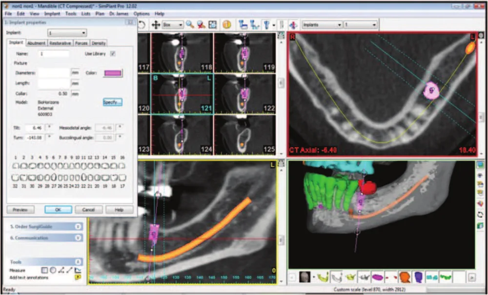
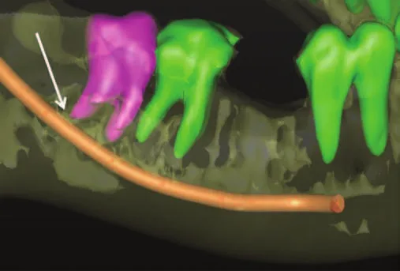

نسخه استخراجشده؛ ترجمه یا تأیید علمی انجام نشده است. وضعیت: captured
دربارهی رادیوگرافی دوبعدی صریح بدان: تمام پانورامیکها درجهای از اعوجاج، بزرگنمایی غیریکنواخت و همپوشانی تصویر دارند که میتواند به اندازهگیری نادرست بینجامد.
و عددی هست که بحث را تمام میکند: مطالعات نشان دادهاند در بیش از ۷۰ درصد مواردی که اندازهی ایمپلنت ابتدا از روی پانورامیک تعیین شده بود، پس از ارزیابی CBCT اندازه باید تغییر میکرد.
هفت مورد از ده مورد. این دیگر «خطای گاهبهگاه» نیست؛ الگوست.
گایدهای بزرگنمایی (۲۵ درصد): این گایدها روی رادیوگرافی دوبعدی سوار میشوند و بزرگنمایی ثابتی فرض میکنند، در حالی که بزرگنمایی پانورامیک متغیر است (نه ۲۵ درصد ثابت)؛ به همین دلیل اغلب به نمایش نادرست استخوان موجود میانجامند و هرگز نباید تنها معیار ارزیابی محل ایمپلنت باشند، چون به برآورد بیش از حد ابعاد استخوان منجر میشوند.
و پانورامیک یک نقص دیگر هم دارد: ممکن است استخوان موجود بالای کانال IAN را نشان دهد، ولی عرض استخوان را نشان نمیدهد. یعنی حتی وقتی ارتفاع را درست بخوانی، بُعد دیگری را نمیبینی.
در مقابل، CBCT: MSCT و CBCT دقیقترین روشهای تصویربرداری برای ارزیابی استخوان موجود و شناسایی عصب آلوئولار تحتانیاند. و مزیت تعیینکنندهشان: تصاویر CBCT بزرگنمایی ندارند و ۱:۱ هستند، پس میتوان برای اندازهگیریهای نزدیک به ساختارهای حیاتی به آنها تکیه کرد.
گاید جراحی — و عددی که ارزشش را نشان میدهد: مطالعات نشان دادهاند ایمپلنتهای گذاشتهشده با گاید جراحی در فاصلهی ۰٫۹ میلیمتری موقعیت برنامهریزیشده قرار گرفتند، در حالی که کاشت آزاد (free-hand) انحرافی حدود ۲ تا ۳ میلیمتر داشت.
حالا این را کنار منطقهی امن ۲ میلیمتری بگذار: انحراف ۲ تا ۳ میلیمتری یعنی کل منطقهی امن میتواند در یک حرکت مصرف شود.
اما گاید هم باید مهار شود: گایدهای جراحی همیشه باید تثبیت شوند و موقعیت ایدهآلشان تأیید گردد — نمونهاش تثبیت گاید بافتبنیاد با پیچ پالاتال برای جلوگیری از حرکت.

قاعدهی مرکزی این بخش: منطقهی امن ۲ میلیمتری در آمادهسازی استئوتومی و کاشت نهایی، در پیشگیری از اختلال حسی حیاتی است و همیشه باید رعایت شود.
و چرا ۲ میلیمتر و نه تماس صفر؟ چون آسیب فشاری (نوروپراکسی) میتواند با نزدیک شدن به عصب، بدون تماس واقعی رخ دهد. یعنی این حاشیه برای خطای اندازهگیری نیست فقط؛ برای فیزیولوژی است.
و راه رسیدن به آن، همیشه جابهجا کردن ایمپلنت نیست: انتخاب ایدهآل ایمپلنت (کاهش طول) هم راهی برای حفظ منطقهی امن ۲ میلیمتری است.
لوپ قدامی — عددی که به منطقهی امن اضافه میشود.
بخش قدامی و پایینیِ عصب منتال، لوپ قدامی نامیده میشود. مطالعات اخیر شیوع بالایی گزارش کردهاند: ۷۰ درصد، با میانگین فاصلهی قدامی ۱٫۱۶ میلیمتر.
و قاعدهی عملی: اندازهی لوپ قدامی باید به منطقهی امن اضافه شود تا به عصب منتال آسیب نرسد. یعنی در حضور لوپ، فاصلهی لازم از فورامن بیشتر از حالت بدون لوپ است.
و صریح بدان: ناتوانی در تشخیص وجود لوپ قدامی میتواند به آسیب عصب منتال بینجامد.
یک اشتباه تشخیصی رایج: شاخهی عصب انسیزیو را با لوپ قدامی اشتباه نگیر. این دو در تصویر شبیهاند ولی معنایشان برای طراحی متفاوت است.
فورامنهای فرعی و دوگانه: تصور میشود ناشی از انشعاب زودهنگام عصب آلوئولار تحتانی پیش از خروج از فورامن منتال در هفتهی دوازدهم بارداری باشند. فورامن دوگانه بهراحتی در تصاویر سهبعدی یا کرونال CBCT دیده میشود — و بهسختی در پانورامیک.
و یک واقعیت آناتومیک که همهی محاسبات را نسبی میکند: موقعیت باکولینگوالی عصب درون مندیبل بسیار متغیر است، و همینطور شیوع و مسیر تقعرهای استخوانی لینگوال. به همین دلیل، کاشت ایمپلنت در سمت باکال یا لینگوال کانال برای دور زدن آن، حتی با جراحی گاید CBCT، عارضهی زیادی دارد.
و یک عدد که پیشفرضها را میشکند: در حدود ۲۸ درصد بیماران، هیچ پلیت کورتیکال فوقانی روی کانال وجود ندارد. یعنی در بیش از یک چهارم بیماران، آن «سقف استخوانی» که ناخودآگاه انتظارش را داری، وجود ندارد. و حتی جایی که هست، آنقدر نازک است که حس کردنش با مته تقریباً ناممکن است.
